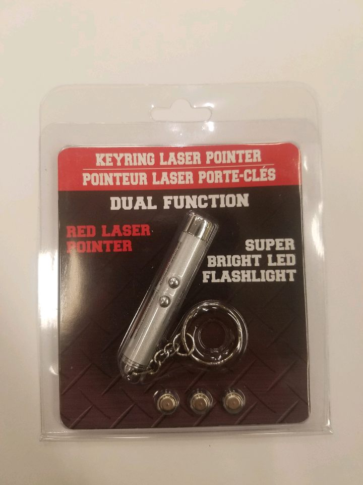
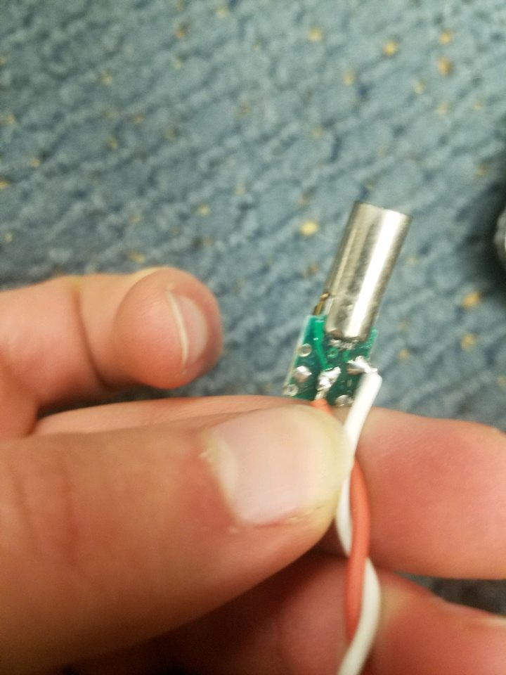

Arduino Code
We integrated visible lasers into our robots because shooting with IR LEDs is great for safety, range and accesibility, but it is hard to see where you're shooting. Visible lasers allow a shooter to see exactly where she is aiming when she goes to shoot.
The visible lasers which we used started their Lab 1015 journey at a Dollar Tree store in Framingham, Massachusetts. We called the three nearest Dollar Tree stores if they carried laser keychains and only the one in Framingham did, so it was to Framingham we went!
After coming back, we had five laser keychains. We ripped the top and bottoms off of the keychains to take out the circuit inside.
Then, according to this Instructables tutorial we cannabalized the keychain into a separate laser. Here's how it went:
The circuit inside the keychain had two buttons on it, a spring-like connection to the coin cell batteries, a white, visible LED on it, and the laser.
We desoldered everything except for the laser using a soldering iron, a soldering wick and needle-nose pliers.
Next, we cut the whole bottom half of the circuit off using wire cutters. We did this because we only needed a positive and negative connection to the laser.
Last we soldered wires onto two spots where we had desoldered a button.
